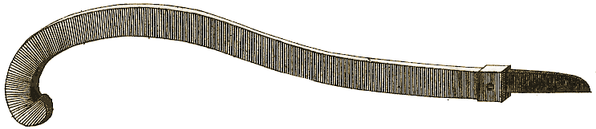
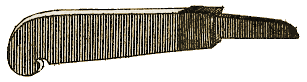
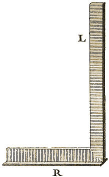
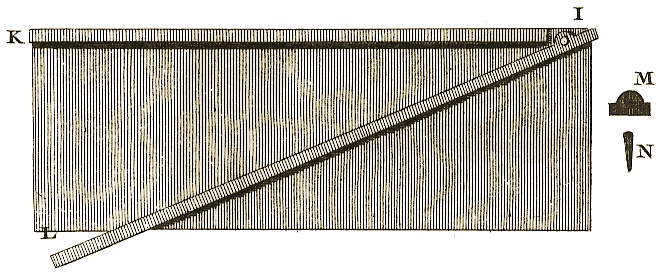
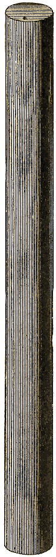
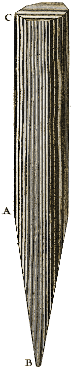
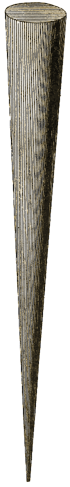
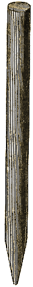
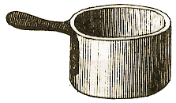

Planche IV.
Figures
20, 21, 22, 23, 24, 25, 26, 27, 28, 29, 30, 31.
Planche : précédente - suivante.

Figure 20. - 72, 937, 950.

Figure 21. - 73, 906.
|  | |
|
75. |
 |
Figure 24. - 77.

Figure 25. - 78.
|
80. |
 |
|  | |
|  | |
|  | |
|  | |
20, 21, 22, 23, 24, 25, 26, 27, 28, 29, 30, 31.
Planche : précédente - suivante.